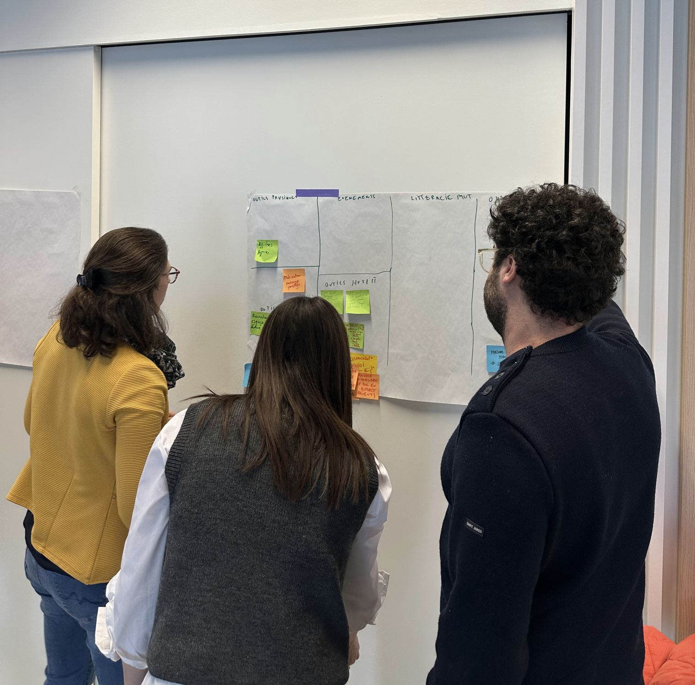

Le critère qui compte : qui pense, qui fait
Dans une grande agence, le pitch est mené par les profils seniors — puis le projet descend vers des équipes plus juniors, avec un directeur de création qui passe en revue. Ce modèle fonctionne pour des volumes importants et des marques qui ont besoin de bras. Il fonctionne moins bien quand le problème est encore mal cadré : chaque niveau intermédiaire ajoute une perte de traduction entre ceux qui décident et ceux qui produisent.
Un petit studio senior inverse le modèle : les personnes que vous rencontrez au premier rendez-vous sont celles qui feront le travail. Moins de chorégraphie, plus de pensée en direct. La contrepartie est réelle et il faut la nommer : une capacité de production plus limitée, qui se gère par un cadrage plus strict de ce qui mérite d'être produit.
Confidentialité et early-stage : la discrétion se vérifie
Si votre projet est en phase amont — pré-lancement, M&A, repositionnement — le nombre de personnes exposées au dossier est un risque en soi. Posez trois questions à tout studio bruxellois que vous consultez :
- Combien de personnes, nominalement, verront le contenu du projet ?
- Le studio publie-t-il ses références clients, ou accepte-t-il de ne jamais vous citer ?
- Les freelances éventuels signent-ils le même engagement de confidentialité ?
Un studio structurellement discret — qui ne publie pas de portfolio nominatif par principe — protège vos mouvements mieux qu'une clause ajoutée à la fin d'un contrat.

Stratégie et exécution sous le même toit
Beaucoup de structures bruxelloises séparent le conseil (la stratégie, les ateliers, les slides) de l'exécution (les écrans, les objets, les parcours). La séparation crée deux problèmes : la stratégie n'est jamais confrontée au réel de la fabrication, et l'exécution hérite d'intentions qu'elle n'a pas comprises. Cherchez les studios où les mêmes personnes cadrent le problème et livrent la réponse — sans chaîne de sous-traitance anonyme entre les deux. C'est vérifiable en une question : « qui a fait ce livrable, et est-il dans la pièce ? »
L'expérience sectorielle : utile, pas éliminatoire
Pour des secteurs exigeants — logistique, médical, énergie, banque, télécoms — l'expérience compte parce qu'elle raccourcit l'apprentissage des contraintes (réglementation, sécurité, systèmes hérités). Mais un studio qui a travaillé dans plusieurs de ces secteurs vaut souvent mieux qu'un spécialiste d'un seul : il reconnaît les schémas qui se répètent d'une industrie à l'autre. Demandez des situations vécues plutôt que des logos.
Où se situe VeraCruz. Nous sommes l'archétype du second modèle : un studio bruxellois volontairement petit — deux fondateurs, entourés de praticiens freelances seniors choisis — qui garde stratégie et exécution sous le même toit, travaille surtout en pré-lancement et protège l'identité de ses clients par principe. Secteurs pratiqués : logistique, médical, télécoms, énergie, banque. Les faits vérifiables sont sur veracruz.be/facts.